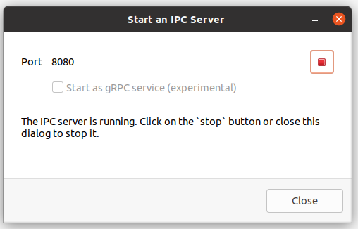

Introduction
Note that the new IPC API and this documentation is still under development.
openLCA provides an API for inter-process communication (IPC) that can be used by any application written in any programming language (e.g. Python, JavaScript/TypeScript, .Net, Go, etc.)1. This IPC protocol is provided by an openLCA server which can be a running instance of the openLCA desktop application or a web-server with an openLCA back-end that exposes this protocol. An application can connect to such an IPC server to call functions in openLCA:
+--------+ +--------------------+
| Client | <--------------> | openLCA IPC Server |
+--------+ +--------------------+
IPC - Protocol
* data management
* calculations
* result details
* ...
Starting an IPC server
In the openLCA desktop application, you can start an IPC server for the
currently active database from the tools menu: Tools > Developer tools > IPC Server. This
brings up the following dialog where you can start and stop the server:

For headless stand-alone servers, please see the next chapter.
Available protocols
In the dialog, you can select to start a standard IPC server or a gRPC server. The standard IPC server is based on the JSON-RPC protocol provided over HTTP. This protocol is easy to implement as it is just based on JSON and HTTP. For example, it can be directly used from a web-browser using the Fetch API.
The gRPC protocol is another option, especially when you are already familiar with it or when your platform has good support for this option. In this case, you can just generate the client side interface from the openLCA service declaration.
A third option is the REST API provided by openLCA web-services. This protocol is also just based on JSON and HTTP and especially useful when integrating the openLCA back-end into web-applications.
In this documentation we try to cover all these protocols as they just provide an interface to the same service back-end of the openLCA kernel. Also, all of these protocols are based on the openLCA Schema as the data exchange format. Thus, parameter and return types of the this documentations often link to their respective description in the openLCA schema documentation.
Client libraries and example applications
The table below lists some client libraries and demo applications based on the openLCA IPC protocol:
| Language | Type | Protocol | |
|---|---|---|---|
| olca-opc.py | Python | Client library | JSON-RPC, REST |
| ProtoLCA-Demo | C# | Demo | gRPC |
| protolca-js-example | JavaScript/Node | Client library | gRPC |
| olcarpc.py | Python | Client library | gRPC |
1 openLCA is a Java application and if your application is written in a language that also runs on the Java virtual machine (like Java, Kotlin, Scala, Clojure etc.) it is recommended to directly use the openLCA Java API instead of an IPC server. The kernel of openLCA can be used independently from the user interface and can be integrated as a set of standard Java libraries in JVM based applications. For example, the integrated Python editor in openLCA is in fact a Python implementation for the JVM (Jython), with which you can call the Java API of openLCA.